Candidate List 20260514 Previous Day Next Day Section 1: New Sources (age<1d) Cosmological Afterglow
Section 2: Old (1-5d) sources observed last night placeholder
Section 1: New Afterglow/FBOT Cands Last Night (0)
Section 2: Older Sources Observed Last Night (24)
0. ZTF26aauvzgh (Afterglow?) [Back to Top] [Share] [Trigger Swift] [Fritz ] [Lasair ]RA, Dec: 209.79567, 47.25993 13h59m10.96s, 47d15m35.75sGalactic (l, b): 93.99559, 65.8823 ext(g-r) = 0.021peak abs mag = -19.10 PS1: 1 source in 3 arcsec Closest: d = 0.45 arcsec photoz=0.11+/-0.02 peak abs mag = -18.91
1. ZTF26aauwlfi (Afterglow?) [Back to Top] [Share] [Trigger Swift] [Fritz ] [Lasair ]RA, Dec: 171.17128, 66.35516 11h24m41.11s, 66d21m18.57sGalactic (l, b): 135.86682, 48.53662 ext(g-r) = 0.011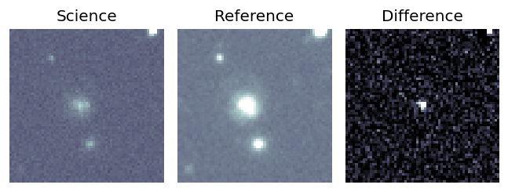
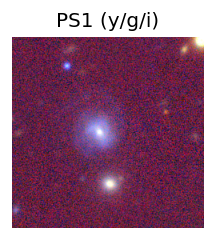
peak abs mag = -17.81 PS1: 1 source in 3 arcsec Closest: d = 2.92 arcsec photoz=0.08+/-0.01 peak abs mag = -18.34 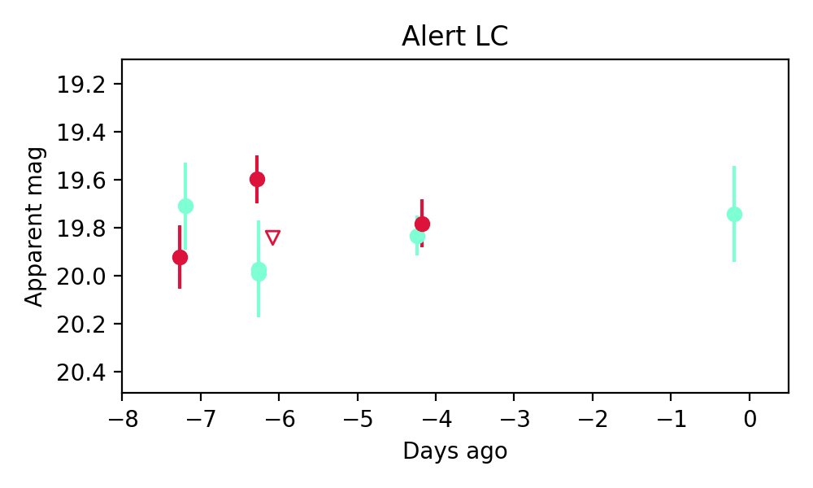
Consistent with synchrotron, g-r>0!
2. ZTF26aauxbav (Afterglow?FBOT?) [Back to Top] [Share] [Trigger Swift] [Fritz ] [Lasair ]RA, Dec: 226.45993, 53.27188 15h 5m50.38s, 53d16m18.76sGalactic (l, b): 88.68906, 53.97552 ext(g-r) = 0.015peak abs mag = -20.63 PS1: 1 source in 3 arcsec Closest: d = 0.35 arcsec photoz=0.21+/-0.09 peak abs mag = -20.35
3. ZTF26aauxdkn (Afterglow?FBOT?) [Back to Top] [Share] [Trigger Swift] [Fritz ] [Lasair ]RA, Dec: 252.68983, 22.35518 16h50m45.56s, 22d21m18.64sGalactic (l, b): 41.9269, 35.95084 ext(g-r) = 0.058peak abs mag = -19.58 LegacySurvey: 1 sources in 3 arcsec Closest: d = 0.11 arcsec, 10.1 deg (east of north) photoz=0.1 (68% bounds 0.09, 0.11), type=SER peak abs mag = -19.1 (68% bounds -18.84, -19.31) Consistent with synchrotron, g-r>0!
4. ZTF26aauxdop (FBOT?) [Back to Top] [Share] [Trigger Swift] [Fritz ] [Lasair ]RA, Dec: 241.18174, 22.10394 16h 4m43.62s, 22d 6m14.17sGalactic (l, b): 37.39181, 46.04418 ext(g-r) = 0.061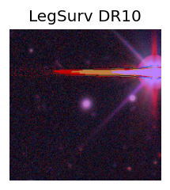
peak abs mag = -20.72 LegacySurvey: 1 sources in 3 arcsec Closest: d = 0.57 arcsec, 304.6 deg (east of north) photoz=0.09 (68% bounds 0.08, 0.11), type=REX peak abs mag = -19.7 (68% bounds -19.43, -20.04)
5. ZTF26aavbyhm (Afterglow?FBOT?) [Back to Top] [Share] [Trigger Swift] [Fritz ] [Lasair ]RA, Dec: 222.84002, 14.61627 14h51m21.61s, 14d36m58.57sGalactic (l, b): 14.87881, 59.43129 ext(g-r) = 0.026peak abs mag = -20.22 LegacySurvey: 1 sources in 3 arcsec Closest: d = 0.66 arcsec, 256.5 deg (east of north) photoz=0.14 (68% bounds 0.13, 0.16), type=PSF peak abs mag = -19.63 (68% bounds -19.44, -19.84)
6. ZTF26aaveyho (Afterglow?) [Back to Top] [Share] [Trigger Swift] [Fritz ] [Lasair ]RA, Dec: 233.98178, 8.73671 15h35m55.63s, 8d44m12.14sGalactic (l, b): 15.48241, 47.04732 ext(g-r) = 0.044peak abs mag = -17.13 Consistent with synchrotron, g-r>0!
7. ZTF26aavilqo (Afterglow?) [Back to Top] [Share] [Trigger Swift] [Fritz ] [Lasair ]RA, Dec: 225.20981, 1.33864 15h 0m50.36s, 1d20m19.09sGalactic (l, b): 358.67597, 49.66757 ext(g-r) = 0.054peak abs mag = -17.83 LegacySurvey: 1 sources in 3 arcsec Closest: d = 4.51 arcsec, 137.5 deg (east of north) photoz=0.03 (68% bounds 0.02, 0.03), type=SER peak abs mag = -17.32 (68% bounds -16.88, -17.73)
8. ZTF26aavqbzd (FBOT?) [Back to Top] [Share] [Trigger Swift] [Fritz ] [Lasair ]RA, Dec: 206.76805, -1.72251 13h47m4.33s, -1d-43m-21.03sGalactic (l, b): 330.04933, 58.18963 ext(g-r) = 0.044peak abs mag = -21.00 LegacySurvey: 1 sources in 3 arcsec Closest: d = 0.40 arcsec, 292.0 deg (east of north) photoz=0.14 (68% bounds 0.12, 0.19), type=SER peak abs mag = -20.12 (68% bounds -19.64, -20.82) Consistent with synchrotron, g-r>0!
9. ZTF26aavqdbg (Afterglow?) [Back to Top] [Share] [Trigger Swift] [Fritz ] [Lasair ]RA, Dec: 203.39262, -20.63455 13h33m34.23s, -20d-38m-4.38sGalactic (l, b): 316.0661, 41.1602 ext(g-r) = 0.087
10. ZTF26aavrsod (Afterglow?) [Back to Top] [Share] [Trigger Swift] [Fritz ] [Lasair ]RA, Dec: 242.92378, -24.06626 16h11m41.71s, -24d-3m-58.53sGalactic (l, b): 350.94051, 19.61509 WARNING: -2.91 deg from ecliptic plane ext(g-r) = 0.27
11. ZTF26aavrvex (Afterglow?FBOT?) [Back to Top] [Share] [Trigger Swift] [Fritz ] [Lasair ]RA, Dec: 230.06446, 1.52622 15h20m15.47s, 1d31m34.40sGalactic (l, b): 3.62156, 46.11633 ext(g-r) = 0.054peak abs mag = -19.71 LegacySurvey: 1 sources in 3 arcsec Closest: d = 0.42 arcsec, 235.3 deg (east of north) photoz=0.1 (68% bounds 0.1, 0.11), type=SER peak abs mag = -18.9 (68% bounds -18.72, -19.08) Consistent with synchrotron, g-r>0!
12. ZTF26aavwktm (FBOT?) [Back to Top] [Share] [Trigger Swift] [Fritz ] [Lasair ]RA, Dec: 240.7095, 56.92329 16h 2m50.28s, 56d55m23.86sGalactic (l, b): 87.97354, 45.07582 ext(g-r) = 0.02peak abs mag = -21.92 PS1: 1 source in 3 arcsec Closest: d = 0.43 arcsec photoz=0.54+/-0.24 peak abs mag = -22.72 Consistent with synchrotron, g-r>0!
13. ZTF26aawampy (Afterglow?) [Back to Top] [Share] [Trigger Swift] [Fritz ] [Lasair ]RA, Dec: 231.03995, 8.68082 15h24m9.59s, 8d40m50.94sGalactic (l, b): 13.13131, 49.49931 ext(g-r) = 0.036peak abs mag = -17.81 LegacySurvey: 1 sources in 3 arcsec Closest: d = 1.85 arcsec, 248.7 deg (east of north) photoz=0.04 (68% bounds 0.03, 0.05), type=SER peak abs mag = -17.67 (68% bounds -17.01, -18.06) Consistent with synchrotron, g-r>0!
14. ZTF26aawcshf (Afterglow?) [Back to Top] [Share] [Trigger Swift] [Fritz ] [Lasair ]RA, Dec: 251.13188, -27.25509 16h44m31.65s, -27d-15m-18.33sGalactic (l, b): 353.54756, 11.96106 WARNING: -4.91 deg from ecliptic plane ext(g-r) = 0.351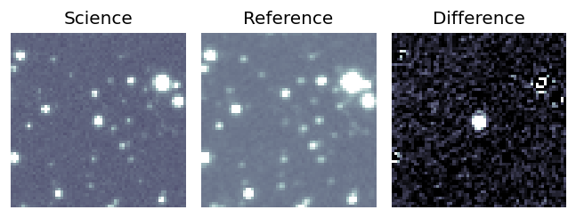
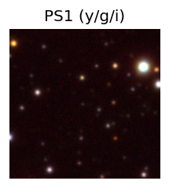
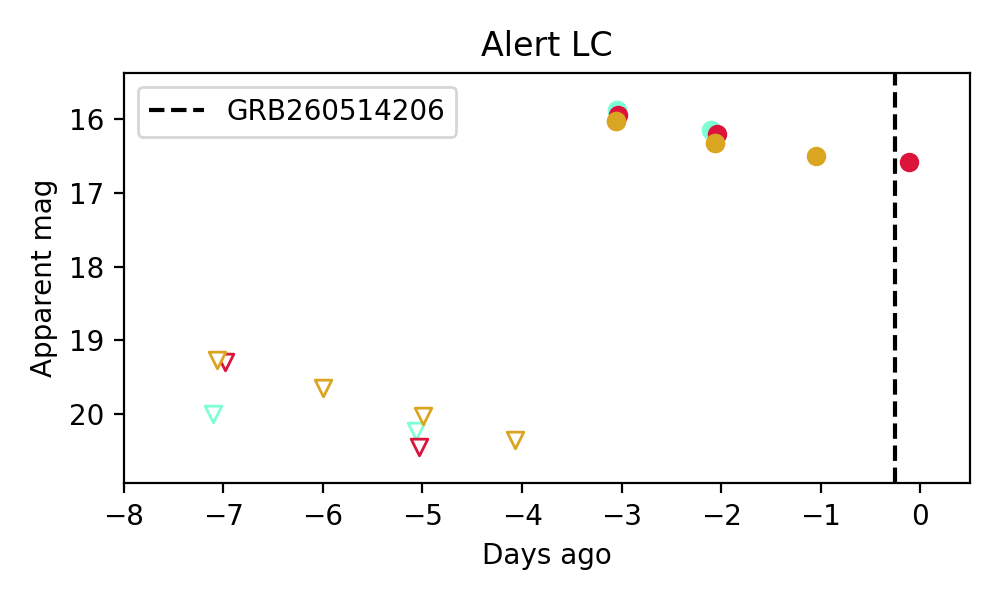
15. ZTF26aawgeif (Afterglow?) [Back to Top] [Share] [Trigger Swift] [Fritz ] [Lasair ]RA, Dec: 259.87719, -13.77216 17h19m30.52s, -13d-46m-19.76sGalactic (l, b): 9.64784, 13.23528 ext(g-r) = 0.498 Consistent with synchrotron, g-r>0!
16. ZTF26aawilct (Afterglow?FBOT?) [Back to Top] [Share] [Trigger Swift] [Fritz ] [Lasair ]RA, Dec: 212.36841, 14.40156 14h 9m28.42s, 14d24m5.63sGalactic (l, b): 1.85511, 67.81097 ext(g-r) = 0.021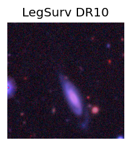
LegacySurvey: 1 sources in 3 arcsec Closest: d = 1.55 arcsec, 355.1 deg (east of north) photoz=0.46 (68% bounds 0.37, 0.64), type=REX peak abs mag = -22.22 (68% bounds -21.69, -23.08) Consistent with synchrotron, g-r>0!
17. ZTF26aawiode (FBOT?) [Back to Top] [Share] [Trigger Swift] [Fritz ] [Lasair ]RA, Dec: 201.21454, 46.11012 13h24m51.49s, 46d 6m36.44sGalactic (l, b): 105.88933, 69.89646 ext(g-r) = 0.025PS1: 1 source in 3 arcsec Closest: d = 8.81 arcsec photoz=0.77+/-0.13 peak abs mag = -24.28
18. ZTF26aawjywa (FBOT?) [Back to Top] [Share] [Trigger Swift] [Fritz ] [Lasair ]RA, Dec: 236.5931, -9.57484 15h46m22.34s, -9d-34m-29.43sGalactic (l, b): 358.18034, 33.93598 ext(g-r) = 0.193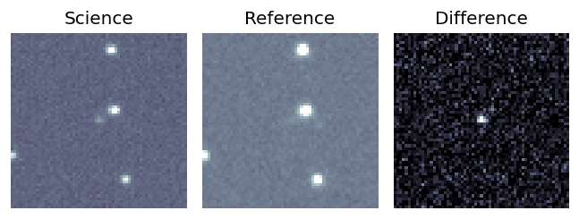
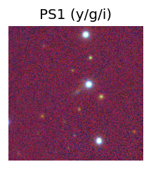
LegacySurvey: 1 sources in 3 arcsec Closest: d = 0.67 arcsec, 301.7 deg (east of north) photoz=0.11 (68% bounds 0.08, 0.14), type=EXP peak abs mag = -18.92 (68% bounds -18.2, -19.43) 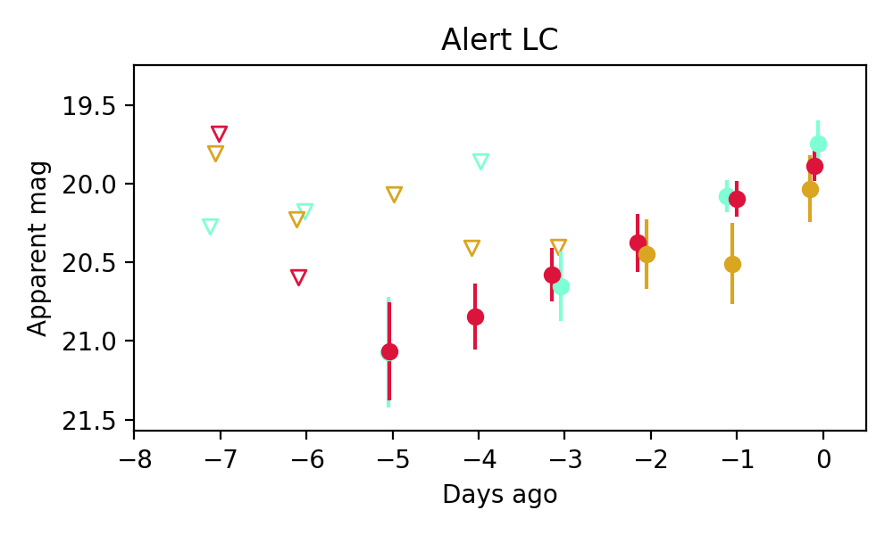
19. ZTF26aawkrmu (Afterglow?) [Back to Top] [Share] [Trigger Swift] [Fritz ] [Lasair ]RA, Dec: 266.93314, 18.13218 17h47m43.95s, 18d 7m55.84sGalactic (l, b): 42.74488, 21.9621 ext(g-r) = 0.068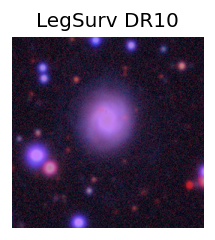
LegacySurvey: 1 sources in 3 arcsec Closest: d = 4.38 arcsec, 1.9 deg (east of north) photoz=0.04 (68% bounds 0.03, 0.06), type=SER peak abs mag = -16.58 (68% bounds -16.05, -17.17) Consistent with synchrotron, g-r>0!
20. ZTF26aawojgz (Afterglow?) [Back to Top] [Share] [Trigger Swift] [Fritz ] [Lasair ]RA, Dec: 249.56805, -1.88477 16h38m16.33s, -1d-53m-5.18sGalactic (l, b): 14.43865, 28.24554 ext(g-r) = 0.185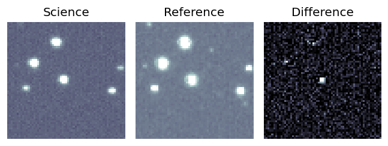
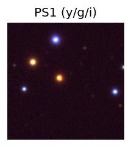
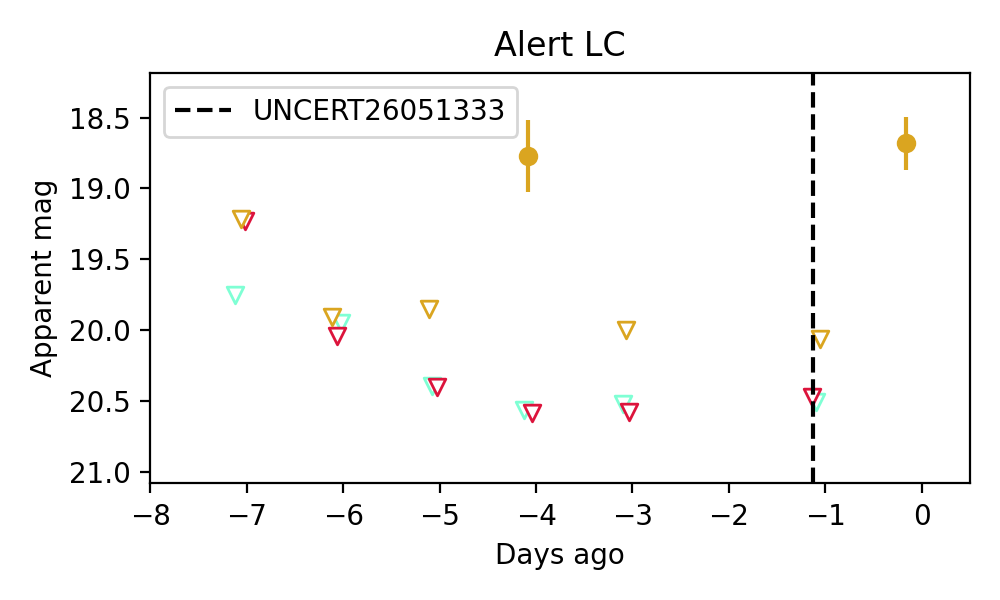
21. ZTF26aawontl (Afterglow?) [Back to Top] [Share] [Trigger Swift] [Fritz ] [Lasair ]RA, Dec: 239.90202, -14.76621 15h59m36.49s, -14d-45m-58.35sGalactic (l, b): 356.24177, 28.04974 ext(g-r) = 0.234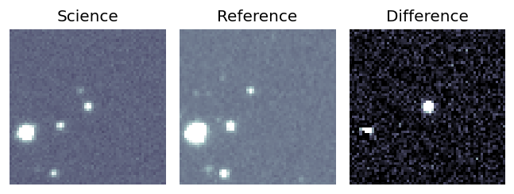
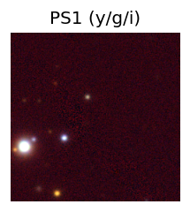
LegacySurvey: 1 sources in 3 arcsec Closest: d = 4.36 arcsec, 284.1 deg (east of north) photoz=0.66 (68% bounds 0.49, 1.22), type=REX peak abs mag = -26.04 (68% bounds -25.23, -27.68) 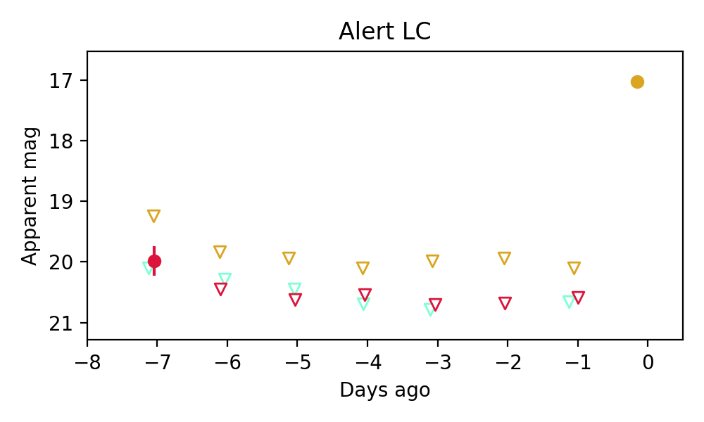
22. ZTF26aawqadh (FBOT?) [Back to Top] [Share] [Trigger Swift] [Fritz ] [Lasair ]RA, Dec: 266.99787, 68.81582 17h47m59.49s, 68d48m56.97sGalactic (l, b): 99.04242, 30.86864 ext(g-r) = 0.038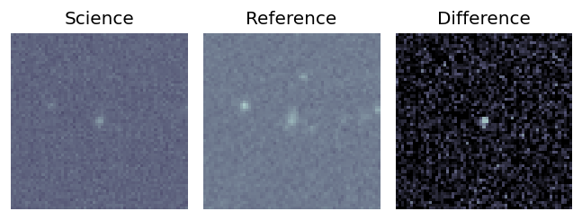
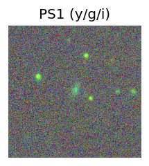
PS1: 1 source in 3 arcsec Closest: d = 0.70 arcsec photoz=0.29+/-0.21 peak abs mag = -20.69 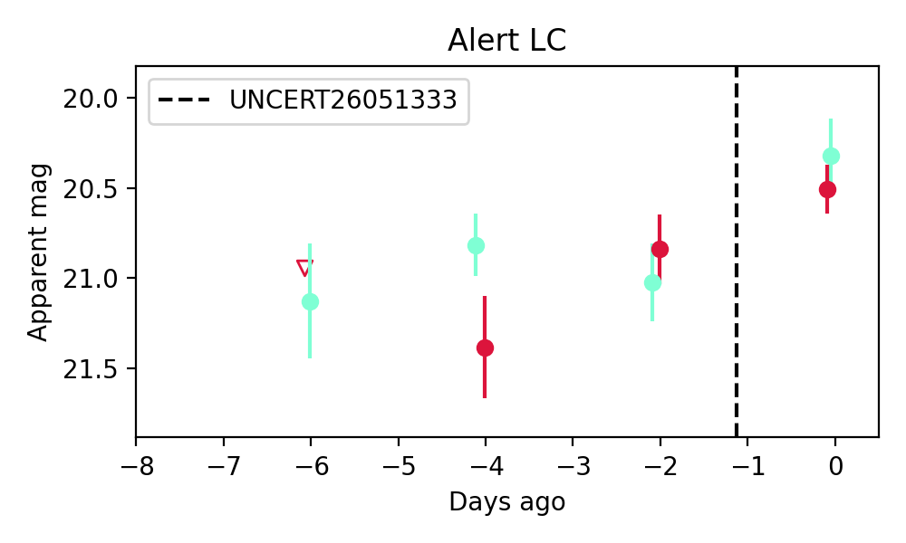
Consistent with synchrotron, g-r>0!
23. ZTF26aawqfxh (FBOT?) [Back to Top] [Share] [Trigger Swift] [Fritz ] [Lasair ]RA, Dec: 241.50007, -23.37002 16h 6m0.02s, -23d-22m-12.06sGalactic (l, b): 350.51065, 21.03679 WARNING: -2.47 deg from ecliptic plane ext(g-r) = 0.171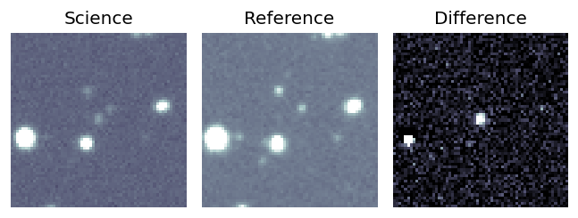
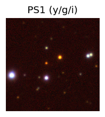
LegacySurvey: 1 sources in 3 arcsec Closest: d = 0.89 arcsec, 139.6 deg (east of north) photoz=0.53 (68% bounds 0.37, 0.66), type=PSF peak abs mag = -23.67 (68% bounds -22.75, -24.26) 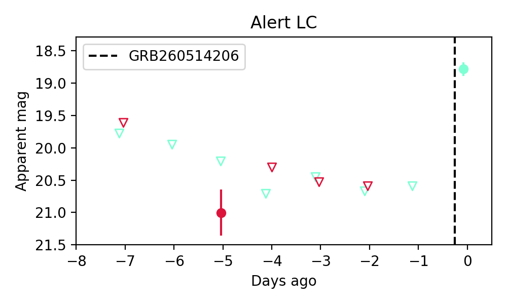